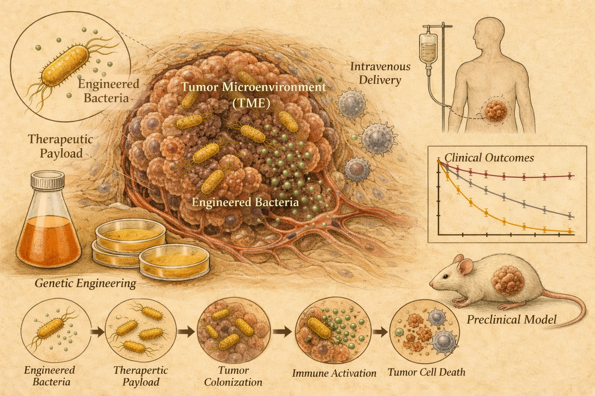

The emerging landscape of engineered bacteria cancer therapies
Engineered bacteria are moving from a historical curiosity toward programmable tumor-targeting medicines, but clinical efficacy remains the central test.

Solid tumors remain difficult to treat because they can be heterogeneous, poorly penetrated by therapies and able to lose target antigens. Bacteria offer a different route: some strains can preferentially colonize tumors and reshape the tumor microenvironment. Historical approaches include BCG, an attenuated Mycobacterium bovis strain used for non-muscle-invasive bladder cancer.
What they did
Ballister and colleagues surveyed rationally engineered live bacterial cancer therapies across preclinical papers, clinical trials and company formation over roughly three decades. Their index covers genetic attenuation, recombinant payload expression, chemical conjugation and other design strategies, rather than unmodified bacterial preparations.
Key finding
The review identified 532 publications, 64 clinical trials and 24 company formations. More than 40 bacterial species have been engineered, but clinical trials are concentrated in Listeria monocytogenes and Salmonella enterica. Current momentum is shifting toward immunomodulation, tumor microenvironment modulation and combination strategies.
Why it matters
The field is no longer defined only by bacterial vaccines or intrinsic immune stimulation. Synthetic biology now enables strains that sense, compute and respond inside tumors, potentially delivering cytokines, checkpoint-related payloads, prodrug-activating enzymes or microenvironment-modifying factors where conventional therapies struggle to reach.
Clinical results remain uneven. Many intravenously administered Listeria vaccine trials did not show sufficient efficacy, and systemic delivery is constrained by human sensitivity to bacterial endotoxin. Tumor colonization, safety and potency still need careful optimization.
Engineered bacteria are best viewed as programmable, living delivery systems. Their promise depends on matching the bacterial chassis, route of administration and therapeutic payload to the tumor setting.
The central shift is from using bacteria as blunt immune stimulants to engineering them as tunable agents inside tumors.
The emerging landscape of engineered bacteria cancer therapies
Authors: Edward R. Ballister, Alexander Michels, Rosa L. Vincent, Lior Kreindler, Sreyan Chowdhury, Samik Upadhaya, Ana Rosa Saez-Ibañez, Tao Tu, Juraj Gottweis and Tal Danino
Journal: Nature Biotechnology